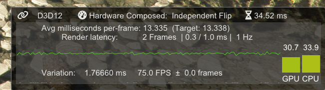
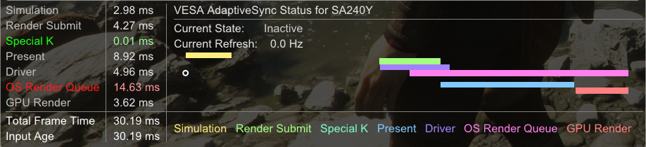
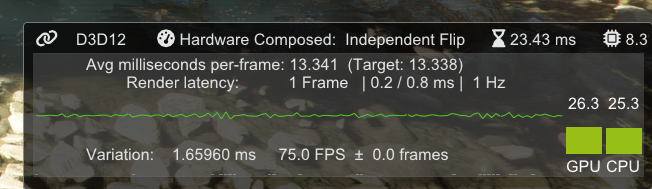
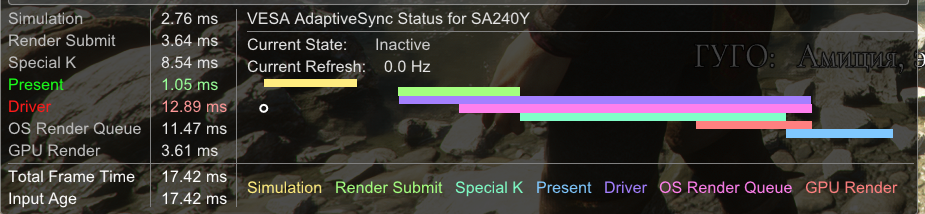
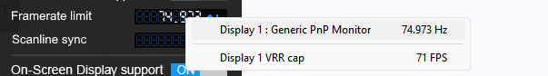
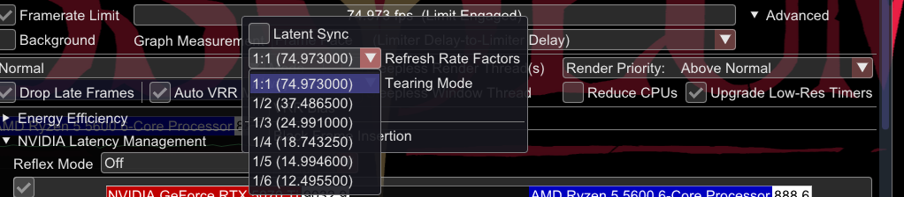
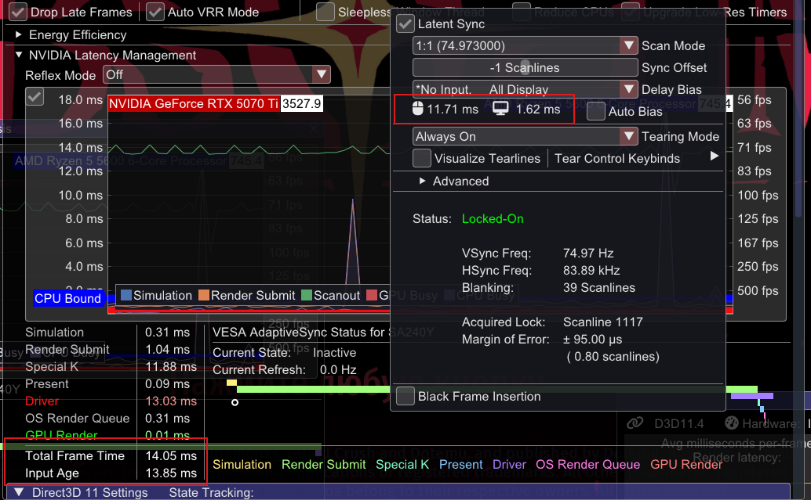
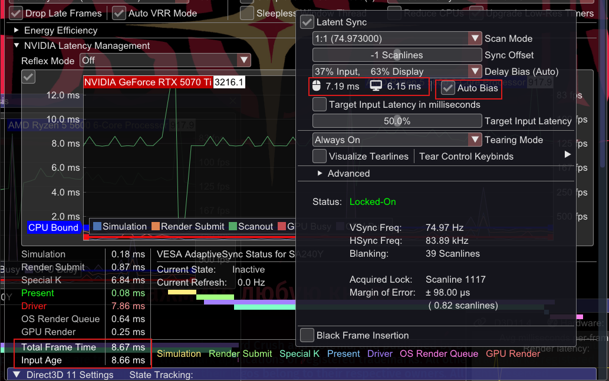
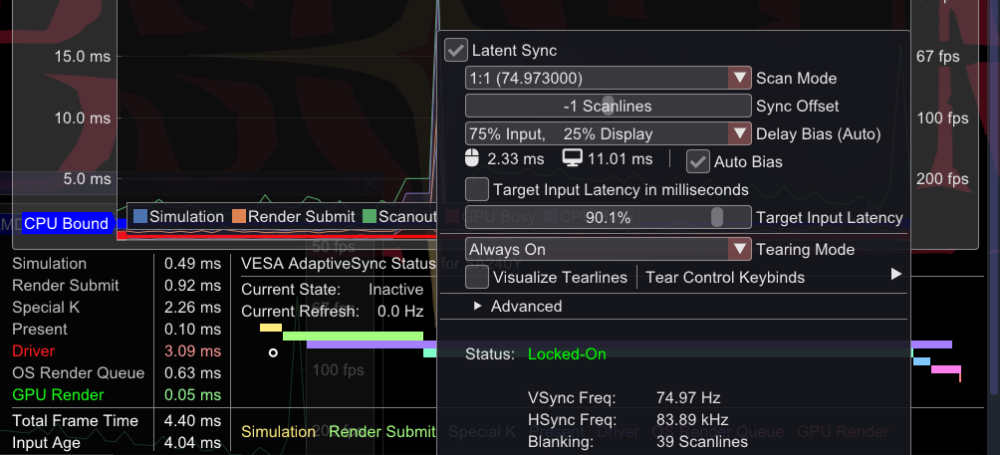
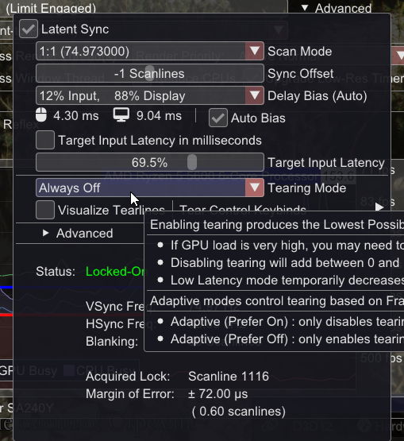

Fixed Refresh Rate Monitor
1. For Minimum Latency
V-Sync OFF + Reflex.
If the game does not have Reflex, it can be injected through RTSS or Special K to improve control responsiveness.
2. To Eliminate Tearing and Improve Smoothness
2.1 V-Sync + FPS Cap
Use an FPS cap that is equal to or a fraction of the monitor's refresh rate.
The best limiters for this are RTSS (in Async or Back Edge Sync mode) or SpecialK (in Low Latency / Normal mode).
What is the problem? The main problem with V-Sync is that it creates a frame queue, adding at least 2+ frames of latency. If we cap FPS so that the graphics card cannot fill this buffer, latency drops to just ~1 frame.
The cap must strictly match the display refresh rate (you can try 0.100 or 0.001 below it) or be the refresh rate divided by an integer (for example, Hz/2 or Hz/3). Arbitrary caps cause animation errors.
Example:


V-Sync WITHOUT a cap (High latency)


V-Sync WITH a cap (Low latency)
In RTSS, right-click the Framerate limit field to quickly select the exact refresh rate:

In Special K, right-click the frame limiter slider to select the refresh rate or a fraction of it:

2.2 SpecialK Latent Sync
Latent Sync — a feature that provides conditionally tear-free output. It offers input latency equal to or even lower than VRR.
It is a two-phase limiter that waits before and after the game's Present call. CPU idle time is split between waiting for the vertical blanking interval (for a stable, tear-free image) and delaying the start of the next frame (to reduce input lag).
Delay Bias: This setting controls the balance. Although its default value is 0, you can adjust it to favor lower input latency at the risk of occasional tearing. Auto Bias — the recommended mode, in which Special K adjusts the offset automatically (50% is usually a safe value).



Latency: 14 ms without Delay Bias -> 8 ms (50% Auto) -> 3 ms (90% Auto)
2.3 Latent Sync + Allow Tearing OFF
Disabling tearing (similar to enabling V-Sync) with Latent Sync enabled guarantees a tear-free image with a minimum latency of one frame, which can be reduced further through Delay Bias. You could call it “V-Sync on steroids”.

This English translation was produced primarily using AI.